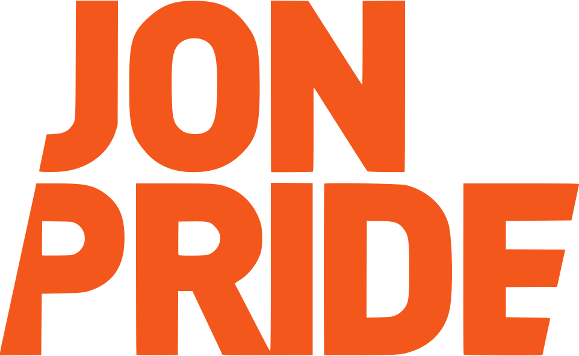

Checkliste · Unternehmen & Marke
Alles, was vor, während und nach einem Fototermin für euer Team geklärt sein sollte. Zum Abhaken, damit am Shootingtag niemand suchen oder warten muss.
Jon Pride · werbung.jonpride.de · Stand November 2026
Hinweis zur Einwilligung: Für Fotos von Beschäftigten gelten das Recht am eigenen Bild (§ 22 KUG) und der Datenschutz (DSGVO, § 26 BDSG). Das ist eine allgemeine Information und keine Rechtsberatung. Im Zweifel fragt eure Datenschutzbeauftragte oder euren Datenschutzbeauftragten.
Mitarbeiterporträts, Teams bei der Arbeit, Räume und Produkte, an einem Tag bei euch vor Ort. Preise und Beispiele: werbung.jonpride.de/unternehmensfotografie